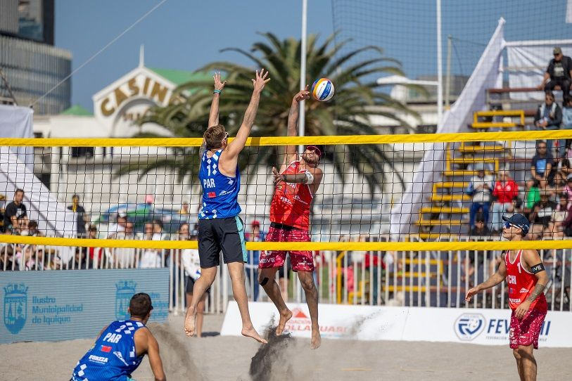

¿Qué es el Voleibol tradicional o de cancha?

El voleibol de cancha es un deporte de equipo que se practica en interiores, sobre una superficie sólida como madera o material sintético. Se juega en una cancha rectangular dividida en dos campos iguales por una red ubicada en el centro. Cada equipo está compuesto por seis jugadores que asumen roles específicos, como colocador, atacante, bloqueador, líbero, entre otros.
El objetivo principal del juego es que los equipos pasen el balón por encima de la red utilizando como máximo tres toques, con la finalidad de hacer que el balón toque el suelo en el campo contrario. Paralelamente, deben evitar que caiga en su propio campo. Las reglas del voleibol de cancha incluyen sistemas de rotación para que todos los jugadores participen en las diferentes posiciones, lo que fomenta el trabajo en equipo y la estrategia táctica.
Este deporte se caracteriza por su rapidez y precisión, donde los jugadores deben poseer habilidades técnicas como el saque, el pase, el remate, el bloqueo y la defensa. Además, es ampliamente practicado tanto a nivel recreativo como competitivo en todo el mundo, y es parte de los Juegos Olímpicos desde 1964.
¿Qué es el voleibol de playa?
El voleibol de playa es una versión adaptada del voleibol que se juega al aire libre, sobre arena. A diferencia del voleibol de cancha, los equipos están compuestos por solo dos jugadores, lo que significa que no hay roles fijos, y ambos deben ser versátiles para encargarse de la defensa, el ataque y la colocación. La cancha es más pequeña, y también está dividida en dos partes iguales por una red central.
En esta modalidad, el entorno juega un papel importante, ya que los jugadores están expuestos a condiciones climáticas como el sol, el viento o la lluvia, lo que añade un desafío adicional al juego. El voleibol de playa también tiene reglas más estrictas en cuanto a algunos movimientos, como los toques abiertos (con las manos) y ciertos tipos de remates. Además, la superficie de arena requiere un mayor esfuerzo físico, ya que dificulta los desplazamientos rápidos.
Esta disciplina es conocida por su ambiente relajado y su conexión con un estilo de vida playero, aunque también es altamente competitivo. Fue incluido como deporte olímpico en 1996 y desde entonces ha ganado gran popularidad en todo el mundo.